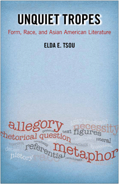

<body bgcolor="#FFFFFF" text="#000000" link="#0000FF" vlink="#CC0000" alink="#CC0000"><center><hr width="350" size="1" align="center" noshade>How literary texts use classical tropes to challenge ideas about race and the very concept of Asian America<hr width="350" size="1" align="center" noshade><p><a href="https://cdcshoppingcart.uchicago.edu/Cart/ChicagoBook.aspx?ISBN=9781439911242&&PRESS=temple" target="_top">Buy this book!</a> | <a href="https://cdcshoppingcart.uchicago.edu/Cart/Cart.aspx?PRESS=temple" target="_top">View Cart</a> | <a href="https://cdcshoppingcart.uchicago.edu/Cart/Cart.aspx?PRESS=temple" target="_top">Check Out</a></p><p></p></center><!--none//--><h1>Unquiet Tropes</h1>
<H2>Form, Race, and Asian American Literature</H2>
<h3>Elda E. Tsou</h3>
<P>cloth 1-4399-1124-X $84.50, Mar 15, <FONT COLOR=#990033>Available</FONT>
<br>paper 1-4399-1125-8 $26.95, Mar 15, <FONT COLOR=#990033>Available</FONT>
<br>Electronic Book 1-4399-1126-6 $26.95 <FONT COLOR=#990033>Available</FONT>
<BR> 224 pp
5.5x8.5
</P><BLOCKQUOTE><I>"</I>Unquiet Tropes<I> is a theoretically sophisticated yet beautifully, lucidly written book. Through a virtuoso performance of deconstructive reading, it provides surprisingly new and yet utterly persuasive insights into canonical Asian American texts we thought we already knew. Among Tsou’s distinctions is her unique focus on the rhetorical activity of Asian American literary works, which sets her contribution apart from other recent Asian American formalist criticism. Her emphasis on the figural complexity of Asian American literary works makes a huge contribution by showing in a sustained way the achievements of Asian American literature qua literature."</i><br>&#151<b>Colleen Lye</b>, Associate Professor of English at the University of California, Berkeley, and author of <i>America’s Asia: Racial Form and American Literature, 1893-1945</i></I></BLOCKQUOTE>
<P>Until quite recently, Asian American literary criticism had little to do with form. Instead, the tendency was to bind the literary tradition to identity formation. For Elda Tsou, however, the distinctions of ethnic writing extend beyond such facile referential practices to incorporate form and aesthetics.
<P>In <I>Unquiet Tropes</I>, Tsou reconceptualizes Asian American literature as a set of highly particular classical rhetorical tropes including antanaclasis, rhetorical question, apophasis, catachresis, and allegory. Looking at five canonical works—<i>Aiiieeeee!</i>, <i>No-No Boy</i>, <i>China Men</i>, <i>Blu’s Hanging</i>, and <i>Native Speaker</i>—Tsou shows how these texts use figurative means to confront the problem of race. She also explores how traces of Asian American history live on through these figures.
<P>Each case study in <I>Unquiet Tropes</I> considers a different scenario—defiance, coercion, necessity, error, and deceit—to show how literary representation from the 1950s through 1997 has responded to a specific political condition.
<BR>&nbsp;<h2>Excerpt</h2><P>Excerpt available at <a href="http://www.temple.edu/tempress">www.temple.edu/tempress</a></p>
<BR>&nbsp;<h2>Reviews</h2>
<p><i>"Tsou's </i>Unquiet Tropes<i> follows the influential theorizing of Asian American literary studies of the past two decades.... One of Tsou's major contributions is that even as she operates within the 'subjectless' paradigm that...others advance, she clarifies the problems and risks of such a paradigm.... Tsou seems to argue strongly for the ways Asian American writers make a distinctive use of rhetorical tropes."</i>
<br>&#151<b><i>American Literary History</i></b>
<p><i>"The past decade has seen a new formalist turn, a post-identity push back against the author as a source of signification for Asian American literary texts. Elda E. Tsou’s </i>Unquiet Tropes: Form, Race, and Asian American Literature<i> does more than turn this push into shove; it seeks no less than the death of the Asian American author.... Tsou distinguishes her approach from those of other Asian American literary critics in this new formalist turn.... What </i>Unquiet Tropes<i> contributes to Asian American literary scholarship is not simply an alternative way of reading but a vision for the future of the field.... </i>Unquiet Tropes<i> is a tour de force of literary criticism.... [It] revivifies the field by offering new ways of conceiving Asian American literature, setting new directions for Asian American literary studies, and, possibly, freeing Asian American authors from the stifling expectations of what they can and cannot write about."</i><br>&#151<b><i>MELUS</i></b>
<p><i>"Elda Tsou’s examination of 'figurative activity' contributes to current disciplinary debates on the shaping of the aesthetic and the political in Asian American literature by considering classical rhetorical tropes in five field-shaping texts.... </i>Unquiet Tropes<i> offers a finely nuanced reading of how these aberrant discrepancies might self- consciously both register and unsettle the containments of race and form."</i> <br>&#151<b><i>American Literature</i></b>
<BR>&nbsp;<h2>Contents</h2><P>
<p>Acknowledgments
<br>Introduction: <i>Aiiieeeee!</i> and the Phantom Trope
<br>1. Rhetorical Question: <i>No-No Boy</i> and Coercion
<br>2. Apophasis: <i>China Men</i> and Necessity
<br>3. Catachresis: <i>Blu's Hanging</i> and Error
<br>4. Allegory: <i>Native Speaker</i> and Deceit
<br>Conclusion
<br>Notes
<br>Bibliography
<br>Index
</P><BR>&nbsp;<H2>About the Author(s)</H2>
<P><b>Elda E. Tsou</b> is Associate Professor of English at St. John’s University in New York.</P>
<BR><H2>Subject Categories</H2>
<p><A HREF="/tempress/asian_amer.html" TARGET="_top">Asian American Studies</a>
<BR><A HREF="/tempress/literature.html" TARGET="_top">Literature and Drama</a>
<BR><A HREF="/tempress/cultural.html" TARGET="_top">Cultural Studies</a>
</p>
<BR><h2 class="inpageheading">In the series</H2>
<P><I><a href="http://www.temple.edu/tempress/asam_history.html" onMouseOver="window.status='Click for other books in this series!'; return true;" onMouseOut="window.status=''; return true;" target="_top">Asian American History and Culture</a></i>, edited by Cathy Schlund-Vials, Rick Bonus, and Shelley Sang-Hee Lee.
</p><p>Founded by Sucheng Chan in 1991, the <I>Asian American History and Culture</I>, series has sponsored innovative scholarship that has redefined, expanded, and advanced the field of Asian American studies while strengthening its links to related areas of scholarly inquiry and engaged critique. Like the field from which it emerged, the series remains rooted in the social sciences and humanities, encompassing multiple regions, formations, communities, and identities. Extending the vision of founding editor Sucheng Chan and emeriti editor Michael Omi, David Palumbo-Liu, K. Scott Wong and Linda Trinh Võ, series editors Cathy Schlund-Vials, Rick Bonus, and Shelley Sang-Hee Lee continue to develop a foundational collection that embodies a range of theoretical and methodological approaches to Asian American studies.</p>
<p align="center"><a href="https://cdcshoppingcart.uchicago.edu/Cart/ChicagoBook.aspx?ISBN=9781439911242&&PRESS=temple" target="_top">Buy this book!</a> | <a href="https://cdcshoppingcart.uchicago.edu/Cart/Cart.aspx?PRESS=temple" target="_top">View Cart</a> | <a href="https://cdcshoppingcart.uchicago.edu/Cart/Cart.aspx?PRESS=temple" target="_top">Check Out</a></p><p><font face="Arial" size="1"><a href="copyright.html" onMouseOver="window.status='Web Copyright Policy';return true;" onMouseOut="window.status=''" title="Web Copyright Policy">&copy;</a> 2017 <a href="http://www.temple.edu" target="new" onMouseOver="window.status='Link to Temple University home page';return true;" onMouseOut="window.status=''" title="Link to Temple University home page">Temple University</a>. All Rights Reserved. http://www.temple.edu/tempress/titles/2316_reg.html</font></p>